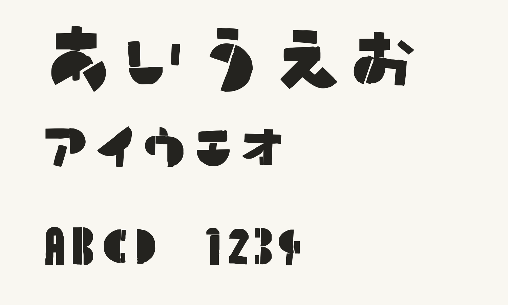
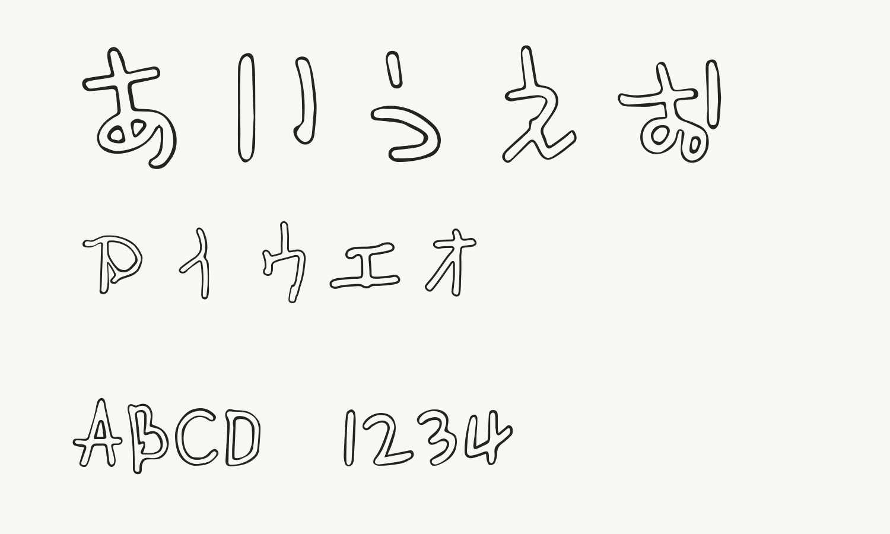
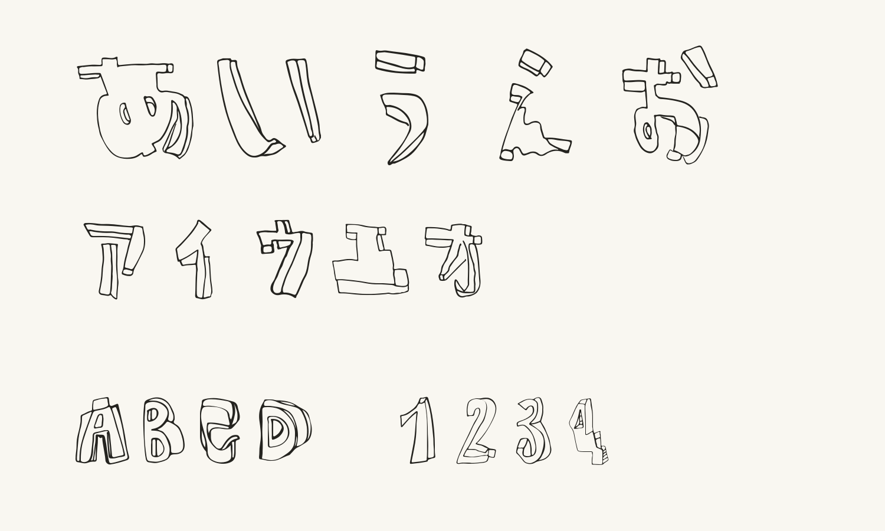

見るポイント
「あ」の下の丸みや「う」の太い曲線には、部品を組み合わせた境目が残っています。半円や四角、三角を並べた作り方が、小さな白いすき間からも伝わります。
作品・制作の例6件を紹介しています。図版で紹介する作品は3作品。実作品図版3点、AAGA模写（Runway制作）0点。
デザインの専門教育機関
桑沢デザイン研究所
働く人が動きやすい服をつくるには、何を調べればよいでしょう。桑沢デザイン研究所は、服や住まいなど、毎日の生活につながるデザインを学ぶ学校として1954年に生まれました。創立者は、服飾（ふくしょく）のデザイナー、桑澤洋子（くわさわ・ようこ）です。
実作品を見る

画像を表示できませんでした。下の出典ページで確認できます。
CAMM creative team（工房ぱれっと）とデザインを学ぶ学生。学生の個人名は作品台帳に記載なし。 / 2017年（公開書体の初版は2020年）
デジタル書体。公開フォントの実際の字形を組んだ本サイトの見本。 ／ 工房ぱれっと・シブヤフォントの共同制作。シブヤフォントが書体データを公開。
「あ」の下の丸みや「う」の太い曲線には、部品を組み合わせた境目が残っています。半円や四角、三角を並べた作り方が、小さな白いすき間からも伝わります。
桑沢の学生と渋谷区の福祉事業所から生まれたシブヤフォントのうち、Google Fontsに採用された3書体の一つです。
撮影・図版制作 該当なし（書体データから組版）
書体・シブヤフォント（The Palette Mosaic Project Authors）／SIL Open Font License 1.1。見本の組版・DESIGN LINEAGE。
出典で作品・資料を見る ↗書体の公開版はSIL Open Font License 1.1
シブヤフォントがSIL Open Font License 1.1で別途公開した版を使用しています。個人利用・商用利用の両方が認められています。
図版は、配布されたままの書体データを本サイトで組版した見本です。書体を使って作った画像に、フォント自体のライセンスを引き継ぐ義務はありません。
配布元の書体データを開く ↗原書体の公開資料 ↗画像の利用条件 ↗同じ見本を全体が見える大小2サイズのWebPで掲載しています。
実作品を見る

画像を表示できませんでした。下の出典ページで確認できます。
原字・石井広和（ワークセンターひかわ）、デザイン・田中茜里（桑沢デザイン研究所） / 2018年（公開書体の初版は2020年）
デジタル書体。公開フォントの実際の字形を組んだ本サイトの見本。 ／ ワークセンターひかわ・シブヤフォントの共同制作。シブヤフォントが書体データを公開。
「い」の両側の線を目でたどってみてください。線と線の間隔が少しずつ変わります。丸みや太さを均一に整えすぎず、手で描いた揺れを残した書体です。
桑沢の学生と渋谷区の福祉事業所から生まれたシブヤフォントのうち、Google Fontsに採用された3書体の一つです。
撮影・図版制作 該当なし（書体データから組版）
書体・シブヤフォント（The Shizuru Project Authors）／SIL Open Font License 1.1。見本の組版・DESIGN LINEAGE。
出典で作品・資料を見る ↗書体の公開版はSIL Open Font License 1.1
シブヤフォントがSIL Open Font License 1.1で別途公開した版を使用しています。個人利用・商用利用の両方が認められています。
図版は、配布されたままの書体データを本サイトで組版した見本です。書体を使って作った画像に、フォント自体のライセンスを引き継ぐ義務はありません。
配布元の書体データを開く ↗原書体の公開資料 ↗画像の利用条件 ↗同じ見本を全体が見える大小2サイズのWebPで掲載しています。
実作品を見る

画像を表示できませんでした。下の出典ページで確認できます。
原字・AKAZUKI（むつみ工房）、デザイン・栗林里紗（桑沢デザイン研究所） / 2018年（公開書体の初版は2020年）
デジタル書体。公開フォントの実際の字形を組んだ本サイトの見本。 ／ むつみ工房・シブヤフォントの共同制作。シブヤフォントが書体データを公開。
「あ」や「B」の端に、折り曲げた紙の側面のような線があります。「い」と数字の「1」を見比べると、短い線一本でも文字に厚みが生まれることがわかります。
桑沢の学生と渋谷区の福祉事業所から生まれたシブヤフォントのうち、Google Fontsに採用された3書体の一つです。
撮影・図版制作 該当なし（書体データから組版）
書体・シブヤフォント（The Rock 3D Project Authors）／SIL Open Font License 1.1。見本の組版・DESIGN LINEAGE。
出典で作品・資料を見る ↗書体の公開版はSIL Open Font License 1.1
シブヤフォントがSIL Open Font License 1.1で別途公開した版を使用しています。個人利用・商用利用の両方が認められています。
図版は、配布されたままの書体データを本サイトで組版した見本です。書体を使って作った画像に、フォント自体のライセンスを引き継ぐ義務はありません。
配布元の書体データを開く ↗原書体の公開資料 ↗画像の利用条件 ↗同じ見本を全体が見える大小2サイズのWebPで掲載しています。
仕事着
仕事の場で着る服を考えた例です。創立者の制作から、生活や働き方とデザインをつなぐ関心を読み取れます。
作品・資料の出典を見る ↗作品名（出典表記）：某自動車メーカー作業衣
桑澤洋子（くわさわ・ようこ） / 1956年 / 仕事着
公式展覧会案内がメーカー名を伏せているため、推定で補いません。
学校案内
学校自身が教育の目的を伝えた資料です。後から語られた評判ではなく、その時代に何を学ぼうとしたかを確認できます。
作品・資料の出典を見る ↗作品名（出典表記）：『専門学校 桑沢デザイン研究所 学校案内 1963』
桑沢デザイン研究所（発行）／個別の編集・デザイン担当は未確認 / 1963年 / 学校案内
この作品一つで、すべての活動を代表するわけではありません。
作業衣
競技を支える人が着る衣服です。選手用ユニフォームとは分け、裏方の仕事にも設計が必要なことを考えます。
作品・資料の出典を見る ↗作品名（出典表記）：東京オリンピック競技要員作業衣
桑澤洋子（くわさわ・ようこ） / 1964年 / 作業衣
この作品一つで、すべての活動を代表するわけではありません。
デジタル書体。公開フォントの実際の字形を組んだ本サイトの見本。
「あ」の下の丸みや「う」の太い曲線には、部品を組み合わせた境目が残っています。半円や四角、三角を並べた作り方が、小さな白いすき間からも伝わります。
作品・資料の出典を見る ↗原題：Palette Mosaic
CAMM creative team（工房ぱれっと）とデザインを学ぶ学生。学生の個人名は作品台帳に記載なし。 / 2017年（公開書体の初版は2020年） / デジタル書体。公開フォントの実際の字形を組んだ本サイトの見本。
デジタル書体。公開フォントの実際の字形を組んだ本サイトの見本。
「い」の両側の線を目でたどってみてください。線と線の間隔が少しずつ変わります。丸みや太さを均一に整えすぎず、手で描いた揺れを残した書体です。
作品・資料の出典を見る ↗原題：Shizuru
原字・石井広和（ワークセンターひかわ）、デザイン・田中茜里（桑沢デザイン研究所） / 2018年（公開書体の初版は2020年） / デジタル書体。公開フォントの実際の字形を組んだ本サイトの見本。
デジタル書体。公開フォントの実際の字形を組んだ本サイトの見本。
「あ」や「B」の端に、折り曲げた紙の側面のような線があります。「い」と数字の「1」を見比べると、短い線一本でも文字に厚みが生まれることがわかります。
作品・資料の出典を見る ↗原題：Rock 3D
原字・AKAZUKI（むつみ工房）、デザイン・栗林里紗（桑沢デザイン研究所） / 2018年（公開書体の初版は2020年） / デジタル書体。公開フォントの実際の字形を組んだ本サイトの見本。
桑澤は、形や色を学ぶ基礎と、仕事に必要な専門の学びをつなげようとしました。学校の歴史には、建築家や彫刻家など、異なる分野の人の名前が並びます。学校名に「研究所」とありますが、作品の見た目が一つにそろう流派ではありません。
学校全体に共通する作品の配色はありません。服の色なら、使う場所や仕事との関係を考えます。
学校案内では、授業内容をどの順番で見せるかに注目します。書体だけで教育の考え方はわかりません。
仕事着は、腕を上げる、かがむ、道具を使うといった動きと一緒に見ます。見た目と使いやすさを切り離しません。
服、室内、平面などを学ぶ基礎がどうつながるか、学校案内や授業の記録を比べてみます。
創立者の服と、在校生の課題と、卒業後の仕事は別の資料です。著名な卒業生の作風を学校全体の特徴にはしません。
自分が一日使う物のうち、少し変えると楽になりそうなものはありますか。身近な動作をよく見ることから、デザインの問いが始まります。
創立期の服飾教育の資料に加え、渋谷の福祉施設と学生が一緒につくった書体を紹介します。文字の見本には、それぞれの制作チームが一般に公開した書体を使っています。
作品・制作の例6件を紹介しています。図版で紹介する作品は3作品。実作品図版3点、AAGA模写（Runway制作）0点。